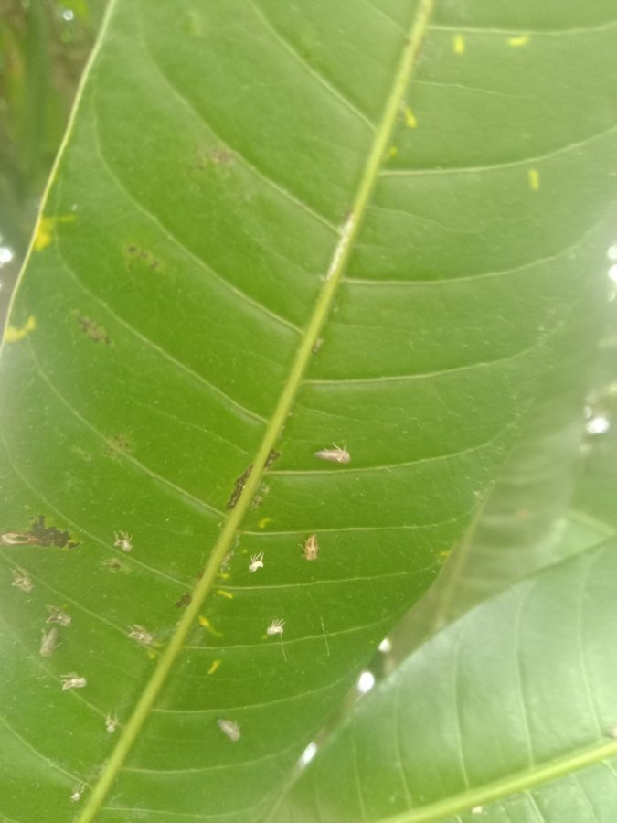

आम का फुदकाMango Hopper
Idioscopus clypealis · Auchenorrhyncha · INS-0057

- Scientific name
- Idioscopus clypealis (Lethierry, 1874)
- Family
- Auchenorrhyncha
- Hindi
- आम का फुदका
- Local names
- aam ka fudka, aam ka phudka, bhunga, mango hopper
- Status here
- native
- Movement
- Resident, here all year
- IUCN
- not evaluated
- Review
- audited and independently read
When to look कब देखें
Expected mainly in May, June, July, August, September, October, November, December.
Uses and possibilities उपयोग और संभावनाएँ
Drawn from the documented uses in the profile below, where each is labelled traditional, current or a research lead. All uses →
Tell it apart from इनसे अलग पहचानें
आम का फुदका / Mango Hopper
Idioscopus clypealis (Lethierry, 1874) — Auchenorrhyncha
आम का फुदका — आम की पत्तियों के नीचे की ओर छोटे-छोटे हरे या पीले-भूरे फुदके जो पत्ती का रस चूसते हैं और पत्तियों को सूखा देते हैं। इतनी छोटी मक्खी कि किसान देखता ही नहीं, पर जब पत्ते सफ़ेद या भूरे हो गए और सूख गए तो समझ आता है कि फुदकों ने पूरी पत्ती को खा लिया। आम के बाग़ में सब से कम ध्यान दिया जाने वाला कीट, पर बहुत कुछ नुकसान करता है।
Quick Identification त्वरित पहचान
| Feature | Description |
|---|---|
| Size | 3.5–4.5 mm; wedge-shaped |
| Colour | Green to yellowish-brown; some individuals darker brown |
| Shape and posture | Compact, held steeply roof-like when at rest; jumps when disturbed |
| Location on leaf | On the underside, in clusters or rows along the midrib |
| Nymphs | Pale greenish-yellow, wingless, in same location as adults |
| Damage sign | Leaves pale, bleached, or mottled; yellowing progresses to browning and drying |
| Honeydew | Sticky residue on leaves and branches; attracts sooty mould |
Field tip: Flip mango leaves and look at the underside. If you see a cluster of tiny green or brown insects that jump when you disturb them, and the leaf surface is pale or yellowed compared to healthy leaves, it is likely the mango hopper. The damage is worst on the youngest, most tender leaves.
हिंदी — कैसे पहचानें: आम की पत्ती को उलटकर देखो। नीचे की ओर छोटे-छोटे हरे फुदके पंक्ति में या समूह में बैठे हों, और पत्ती पीली या सफ़ेद पड़ गई हो, तो ये होंगे। पौधे को छुआ तो उछल जाएँ।
Morphology आकारिकी
Biometrics:
| Measurement | Range |
|---|---|
| Adult body length | 3.5–4.5 mm |
| Adult body width | 1.5–2 mm |
| Egg | 0.8–1 mm, inserted in leaf tissue |
| Nymphal stages | 5, lasting 10–15 days |
| Adults per leaf | 5–50 in moderate infestations |
Adult: Small, compact, wedge-shaped body. Colour varies from light green to yellowish-brown to dark brown, sometimes with faint darker markings on the wings. The wings are held steeply roof-like over the body. Antennae are long, thread-like, and dark. The hind tibia carries a row of spines (the diagnostic character of Auchenorrhyncha). Both males and females are commonly seen.
Egg: Small, pale, crescent-shaped, embedded in the leaf midrib or vein. Females insert eggs singly or in small groups; eggs are often difficult to see.
Larval stage: Five instars. Nymphs are smaller versions of the adult but lack wings; colour matches the adult but may be slightly paler. Nymphs are mobile and can jump.
हिंदी: छोटी, पीली-हरी या भूरी मक्खी, पत्तियों के नीचे। अंडे पत्ती की नस में गड़े होते हैं। इल्ली वैसी ही, बस पंख नहीं।
Behaviour & Ecology व्यवहार और पारिस्थितिकी
A specialist that feeds almost exclusively on mango leaves, inserting its needle-like mouthparts into the leaf tissue and drawing sap. This feeding causes the characteristic bleaching and yellowing of the leaf, and eventually the leaf dries and falls. Infestations are most visible on tender, newly flushed leaves. The insect is active throughout the year in eastern UP, with populations building during the monsoon (when new growth is vigorous) and again in early winter (December–January) when the new season's flowering flush occurs.
The insect is relatively slow-moving and easily overlooked. Its honeydew (sugary excrement) drops onto lower leaves and branches, attracting sooty mould fungi which further reduce the leaf's photosynthetic ability. Predators such as spiders and small parasitic wasps feed on it, but control is usually incomplete in the field.
हिंदी: आम की पत्तियों का रस चूसता है। नई पत्तियों पर सब से ज़्यादा नुकसान। शहद की बूँदें पड़ी पत्तियों पर काली फफूंद लगाती हैं। इसके दुश्मन मकड़ियाँ और छोटी ततैयाँ हैं।
Life Cycle / Phenology जीवन चक्र
| Stage / season | Event |
|---|---|
| Egg, 7–10 days | Inserted in the midrib of mango leaves |
| Nymph, 10–15 days | Five instars, feeding on leaves |
| Adult, 2–3 weeks | Feeding and oviposition |
| May–June | Rising populations on early-season foliage |
| July–September | Heavy infestations; multiple generations during monsoon; active growth period |
| October–November | Decline as new growth slows; lingering populations |
| December–January | Resurgence on flowering flush leaves |
| February–April | Low populations; some activity if irrigation maintains new growth |
हिंदी: अंडा सात-दस दिन, इल्ली दस-पंद्रह दिन, वयस्क दो-तीन हफ़्ते। मई-जून से शुरू, जुलाई-सितंबर में सब से ज़्यादा, फिर कम हो जाता है।
Host Plants or Prey आहार
- Mango Mango: the almost exclusive host; feeds on all mango cultivars
- Related plants: occasionally feeds on related Anacardiaceae like cashew, though far less common
- No documented feeding on major field crops or weeds
Predators / Natural Enemies शत्रु
- Spiders: web-building spiders and hunting spiders that frequent mango foliage
- Parasitoid wasps: small encyrtid and aphelinid wasps (egg and nymphal parasitoids)
- Predatory bugs: anthocorid bugs and nabid bugs that hunt nymphs
- Ladybird beetles: though not specific to this pest, occasionally feed on hoppers
- Entomopathogenic fungi: less common, but Beauveria and Isaria can infect under high humidity
Agricultural / Human Relevance कृषि प्रासंगिकता
The pest. The mango hopper is a chronic but often under-recognized pest of mango orchards in tropical and subtropical India. Damage is indirect but cumulative: the feeding and associated sooty mould reduce photosynthesis, causing leaf yellowing, premature leaf fall, and weakening of the tree. Heavy infestations can delay flowering and reduce fruit set, especially on young trees. The insect is also a known vector of mango malformation disease (though not the primary vector).
What works (Traditional, Today, Research direction):
- Traditional: Pruning of infested branches (selective removal of affected new growth to reduce hopper habitat and force the plant to push new, uninfested foliage).
- Today: Regular scouting of new leaf flush; removal of heavily infested terminal growth. Neem-based insecticides or other selective products applied to the underside of newly flushed leaves. In severe cases, systemic insecticides (imidacloprid, dimethoate) have been used, but resistance is developing. Maintaining tree vigour through proper irrigation and fertilisation reduces damage severity.
- Research direction (a lead, not a result): Conservation of natural predators (spiders and parasitoids) through reduced broad-spectrum spraying. Field-level trials of kaolin spray (which deters hopper oviposition) on mango are showing promise.
हिंदी: आम के बाग़ का छोटा पर सताने वाला कीट। नई पत्तियों पर छिड़काव करने से कुछ बचाव। गिनती करते रहना और भारी संक्रमण की पत्तियों को तोड़ देना। मकड़ियों को बचाना मायने रखता है।
Expected Locally स्थानीय रूप से अपेक्षित
Not a field record. Written from published accounts for eastern Uttar Pradesh. No confirmed local sighting yet — if you have seen it, that is what the atlas needs.
अभी तक स्थानीय पुष्टि नहीं। यह विवरण प्रकाशित स्रोतों से है, किसी अवलोकन से नहीं।
Expected in every mango orchard in Basti district, though often not recognized as a significant pest because the damage is gradual. Highest populations occur during the monsoon (July–September) and again in December–January when flowering-flush foliage is available. A simple record — date, location, number of leaves examined, number infested — would constitute the first local confirmation.
Distribution वितरण
Global range: Tropical South and Southeast Asia, especially India and Sri Lanka; native to the Indian subcontinent.
In India: All mango-growing states, with particular abundance in tropical and subtropical plains regions.
In Uttar Pradesh: Throughout the mango-growing belt, more abundant in the eastern and central plains.
In Basti district / eastern UP: Expected in every mango orchard and backyard mango tree. Density varies with seasonal flushing and weather.
Research Questions शोध प्रश्न
Anyone can investigate these | कोई भी इन प्रश्नों की जाँच कर सकता है
- How many mango hopper nymphs can a single hunting spider consume in one day on a mango leaf? — Observe spider predation directly on infested leaves.
- Which month shows the highest number of mango hopper nymphs on actively flushing mango trees in your village? / आपके गाँव के आम के पेड़ों पर नई पत्तियों पर किस महीने में सब से ज़्यादा फुदकों की इल्लियाँ दिखती हैं? — Scout the same trees monthly, examining 10 young leaves per tree.
- Do mango trees treated with neem spray show fewer hoppers and less sooty mould than untreated trees after one month? — Set up comparison plots.
- How does leaf nitrogen content relate to hopper infestation density on mango trees? — Compare infestations on high-nitrogen and low-nitrogen trees.
- What parasitoid wasps emerge from field-collected mango hopper nymphs? — Bring field-collected infested leaves indoors in a mesh-covered container and observe.
Similar Species मिलती-जुलती प्रजातियाँ
| Species | How to tell apart | हिंदी |
|---|---|---|
| Green leafhopper (Nephotettix spp.) | Larger (4–5 mm); bright green; found on rice and grasses, not mango | धान की हरी मक्खी, बड़ी, धान पर |
| Brown rice leafhopper (Nilaparvata lugens) | Wedge-shaped like mango hopper, but brown; found exclusively on rice at the plant base | धान का फुदका, भूरा, पानी पर |
| Whitefly nymphs | Oval, flat, pale yellow, with waxy filaments; on underside of many crops | सफेद मक्खी, सफेद, फुदकती नहीं |
Field rule: Tiny, pale green to yellowish-brown wedge-shaped insect on the underside of mango leaves, jumping when disturbed, causing yellowing and bleaching of the leaf, almost certainly the mango hopper.
Taxonomy & Classification वर्गीकरण
Original description. Described by Lethierry in 1874. The genus Idioscopus was established in the Auchenorrhyncha (hemipteran insects with a siphoning mouthpart inserted in the centre of the head). The species name clypealis refers to the clypeus (shield-like plate) on the head.
Subspecies. Monotypic — no subspecies are currently recognised.
Family and order placement. Order Hemiptera, superfamily Membracoidea, family Auchenorrhyncha (true leafhoppers and planthoppers). The tibial spur is present, distinguishing it from some relatives.
Phylogenetic notes. Idioscopus clypealis is part of the genus Idioscopus, a group of plant-feeding leafhoppers, most of which are specialists on specific plant hosts.
IUCN status rationale. Not evaluated. As a widespread agricultural pest, it is not assessed by the IUCN Red List.
Photo Gallery फोटो गैलरी
Photos needed आवश्यक फोटो
- [ ] Nymphs and adults on mango leaf underside (पत्ती के नीचे)
- [ ] Infested leaf showing yellowing and bleaching (पीली पड़ी पत्ती)
- [ ] Sooty mould on infected leaves (काली फफूंद)
No photos yet — add field photos to media/species/mango_hopper/ and run node scripts/sync_photos.js.
References संदर्भ
- Lethierry, L. (1874). Essai de division des Hemiptères hétéroptères en familles naturelles. Annales de la Société Entomologique de Belgique 17: 9–35. [original description]
- Pruthi, H.S. & Matta, S.K. (1964). Plant pests of India: a systematic exposition. Indian Council of Agricultural Research, New Delhi. [early life history on mango]
- Atwal, A.S. & Dhaliwal, G.S. (2015). Agricultural Pests of South Asia and Their Management. Kalyani Publishers, New Delhi.
- Sharma, R.C. (1988). Insect pests of mango: their biology, ecology and management. In: Nayar, K.K. et al. (eds.). Approaches for Pest Management in Plantation Crops and Orchards. ICAR, New Delhi.
- Indian Council of Agricultural Research (2014). Integrated Pest Management Package for Mango. ICAR–NCIPM, New Delhi.
- GBIF Occurrence Data — Idioscopus clypealis, India (2023).
Source file: species/fauna/insects/mango_hopper.md